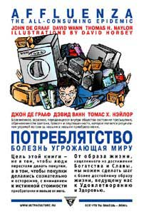

Джон де Грааф и др. • Потреблятство • Перевод: Н. Макарова • non-fiction • 28.12.2003

Что такое потребительство – образ жизни или заразная болезнь? Зачем люди покупают вещи: потому что они в них нуждаются или потому, что в них нуждается пожирающий их микроб потреблятства? Группа американских журналистов и экономистов, создали телевизионное шоу, в котором изучали поведение своих соотечественников – самых оголтелых и безудержных потребителей современности. На основе этого цикла передач и возникла книга, рассказывающая о механизмах, вгоняющих общество в штопор безудержного потребительского азарта, удовлетворяемого за счет всего остального человечества.
Пресса
Marcus Polaris. Рецензия на «Потреблятство»
Издательство “Ультра.Культура” продолжает свою серию “экстремальной культурологии” (“Аллах не любит Америку”, “Медиавирус!”, “Терроризм: взгляд изнутри”) новой скандальной книгой, для перевода которой задействованы богатые смысловые возможности фонетической системы русского языка.
Вообще-то, “Потреблятство” — это в английском оригинале “affluenza”, что звучит, конечно, не так жестко и для обозначения социального феномена отсылает к метафоре, заимствованной из биологии: нечто заразное, вирус, болезнь как наркотическая зависимость человека, живущего (существующего?) в “матрице” постиндустриальной цивилизации, от процесса потребления совершенно ненужных ему для выживания товаров и услуг. Это не новая проблема, но Америка — первая страна, где “affluenza” приобрела характер национальной эпидемии. Книга построена целиком на американском материале и оттого вдвойне интересна, потому как не судить же нам об Америке (и, значит, о том, что угрожает нам в будущем) из политически ангажированных масс-медиа (см. книгу “Медиавирус!”) и голливудского синематографа!
На обложке издания, кстати, помещен слоган в духе “киберпанка”, который в данном случае как нельзя более уместен: “ВСЁ ЧТО ТЫ ЗНАЕШЬ — ЛОЖЬ”. Несмотря на то, что проблематика “общества потребления” постоянно обсуждается в актуальной психологии и социологической публицистике, присутствует в самых ярких художественных произведениях “девяностых” и “нулевых” (“Бойцовский клуб”, “Американский психопат”, “99 франков” и др.), “потреблятство” никогда еще не было возведено в ранг объекта “борьбы с эпидемией”.
Все обычно ограничивалось “обсуждениями”, вздохами и сетованиями: “вот, дескать, до чего дошло! И куда мир катится?” А он не “катится”, он давно уже прикатился и не “ждет у ворот”, а тут уже — не просто в “доме, который построили мы”, но внутри нас.
Книга Де Граафа и соавторов предлагает четкое определение “Симптомов” социальной болезни, угрожающей разрушить само общество, (главы “Покупательская лихорадка”, “Сыпь банкротств”, Раздувшиеся запросы”, “Хроническая закупорка домов”, “Стресс от невоздержанности”, “Боль по утраченному смыслу”, “Индустриальная диарея”, “Истощение ресурсов”, “Неудовлетворение гарантировано”), анализ “Причин” — (избранные темы: “Янки — дурни, денди — нет!”, “Право на лень”, “Евангелие потребления”, “Америка — страна торговых центров”, “Луна в стиле рыночной экономики”, “Гиперкоммерциализация”, “Токсичные отходы — для вас!”, “Хорошие новости — это не новости”, “Нашествие похитителей разума”), и, наконец, стратегию борьбы — “Лечение” — “Вынужденная переоценка”, “Переход к умеренности как революция”, “Природа: существительное или глагол?”, “Поквартальное изменение мира”, “Повернуть рекламу против самой себя”, “Презервативы для кредитных карточек”, “Не наступит ли экономический крах?” и т.д. Иначе… “Если мы не начнем отвергать постоянные требования нашей культуры “покупать сейчас”, нам придется “расплачиваться позже”, причем расплачиваться такими способами, которых мы и представить себе не можем… “Мы, человеческие существа, особенно в этом веке, производили и потребляли в количествах, намного превышающих способность планеты поглощать наши отходы и пополнять свой сырьевой запас”, — утверждает критик больших корпораций Джереми Рифкин.
С Рифкиным соглашается даже один из излюбленных объектов его критики. “Земной шар не может выдержать систематического увеличения числа материальных объектов, — говорит Роберт Шапиро, главный администратор корпорации Монсанто. — Если мы собираемся развиваться путем использования все большего количества сырья, нам лучше поискать новую планету”…” Вот-вот! А то все удивляются: чего это вдруг Буш на Луну собрался да в Марс телескопиками тыкает? Думать надо!
Яков Шустов. Рецензия на «Потреблятство» (aglob.ru)
Оригинальное название этой в высшей степени показательной работы, обнажающей сущность общества потребления, «Affluenza. The all – consuming epidemic» ассоциируется вероятнее с инфлюэнцей – болезнью, унесшей в начале ХХ века больше жизней, чем Первая мировая война. А не как уж с безнравственным поведением, свидетельствующем скорее о крепком здоровье. Уж если переводчик хотел внести в русское название эротический момент, то «Потребомоноз» или «Потребифилис» или на худой конец «Потрегриппер», более отразили сущность представляемой книги.
Судьба «Потреблятства» весьма показательна. Это первая в мире книга, написанная по мотивам телепередачи. Одноименная телевизионная программа вышла на американские телеэкраны в 1998 году и тут же завоевала сердца зрителей. Как признают сами авторы, их книга – это, выражаясь языком общества потребления, «новый и усовершенствованный продукт». И действительно, книга о вреде потребления написана в стиле аннотации к упаковке гербалайфа или мормонской проповеди. Весьма точный анализ сложившейся в западном мире ситуации совершенно алогично переходит к призывам к рациональному потреблению в рамках существующего капиталистического общества, на безудержном потреблении, собственно и основывающемся. То есть предлагается сесть на некую потребительскую диету. «Хочешь потреблять? Спроси у меня как». Подобная авторская позиция может вызвать определенное недоумение у нашей читающей публики. Но не у американской. Которая другого языка, другой точки зрения, просто не воспринимает.
Книга изобилует примерами неправильного потребления, как будто взятыми из советского агитпропа времен «холодной войны». Среднестатистический Джон, лишившийся работы (его заменили роботом), теряет дом, автомобиль, телевизор и холодильник, взятые в кредит. Правда, в брошюрах «Политпросвета» Джон начинал подпевать Полю Робсону и вступать в КПЮСА. В «Потреблятстве» же Джон вкупе с семьей и домашним любимцем находит приют в специальном диспансере «Движения за добровольную умеренность», где его лечат от синдрома «потреблятства» эффектом двадцать пятого кадра по методе Джейкоба Маршака. В книге, конечно, много непонятного нашему читателю, судящему о происходящим в Соединенных Штатах процессам по голливудским агиткам и кривому зеркалу отечественного ТВ. Но тем интереснее ее читать, так как кроме справочника по симптомам и методам лечения синдрома «потреблятства», она интересна как путеводитель по закоулкам загадочной американской души.
В книге масса совершенно потрясающих пассажей в стиле афоризмов Фоменко, звучащих на «Русском радио». И другого Фоменко, историка. Чего стоят, например рассуждения о этно-антропологических корнях потребительских излишеств. Оказывается, наиболее склонны к потребительству потомки тех древних племен, что вели оседлый образ жизни, в отличие от кочевников, имевших имущество, количество которого ограничивалось грузоподъемностью их лошадей или верблюдов. В свете этого наблюдения самым не «потребляцким» народом объявляются евреи. Они, после сорокалетнего хождения с Моисеем, оставив все лишние предметы в песках Синайской пустыни, приобрели, таким образом, врожденный иммунитет против синдрома «потреблятства». Русских же, которые, как известно, произошли от древлян, ограничивших свои потребительские аппетиты размерами порой весьма обширных дупел, согласно этой теории можно считать врожденными потребителями. Единственное, что их оправдывает, это то, что они как белки, забывают, где хранят нажитое. Про это в книге нет. Но всякая теория требует логического завершения.
Руководство Советского Союза видело в синдроме «потреблятства» крайне опасную для существования своего государства тенденцию. Периодически проводились кампании по борьбе с «мещанским бытом», «вещизмом». Неограниченный властитель СССР Иосиф Сталин «умер агитационно», оставив поношенный тулуп и сапоги. Все остальное – дома, автомобили и парадные мундиры – было казенным. Но идеологические заклинания не помогли. Загнанный внутрь вирус собственничества пустил метастазы по всему организму. Напомню, что в СССР практически не было частной собственности. Была государственная (народная), общественная и личная. После развала империи народное, а значит, ничье достояние растащили по приватным норам.
Современный глобалистский империализм использует вирус синдрома «потреблятства» как биологическое оружие. Внедрение «американского образа жизни», основанного на эскалации потребления – обязательная составляющая происходящих сегодня глобализационных процессов. Легко покорить страну, жители которой думают только о наживе и об удовлетворении своих прихотей. Бусы, зеркала и виски были в руках колониалистов оружием не менее действенным, чем ружья.
О симптомах «потреблятсва» и о том, что это весьма опасная, сродни чуме, болезнь, еще в позапрошлом веке говорил антиглобалист «прямого действия», индейский вождь Татанка Йотанка (Сидящий Бык). «Любовь к собственности – это болезнь, которой они (бледнолицые) заражены».